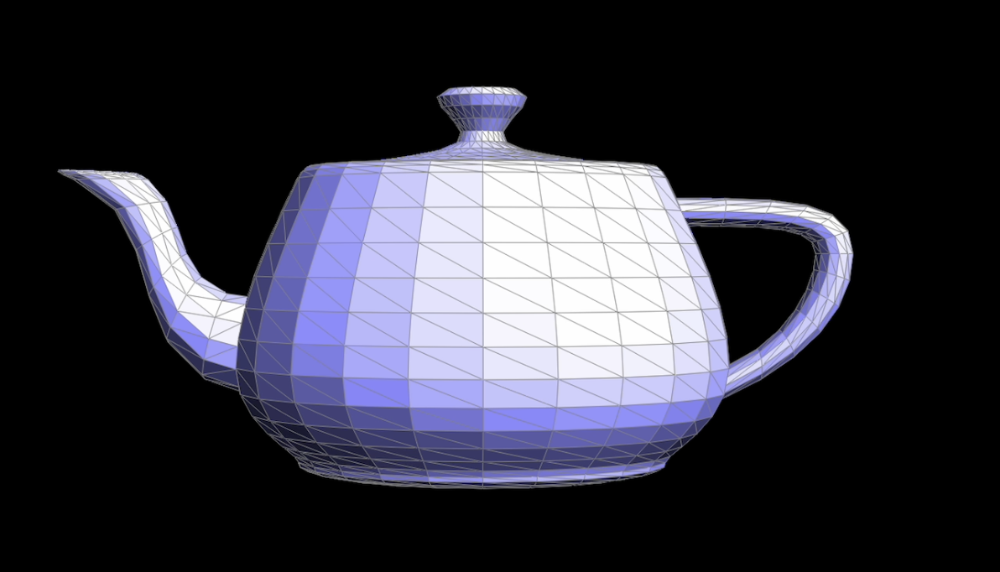
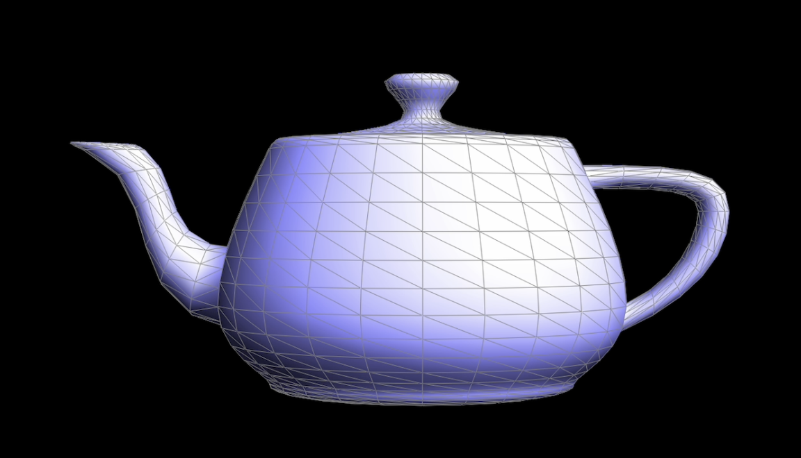
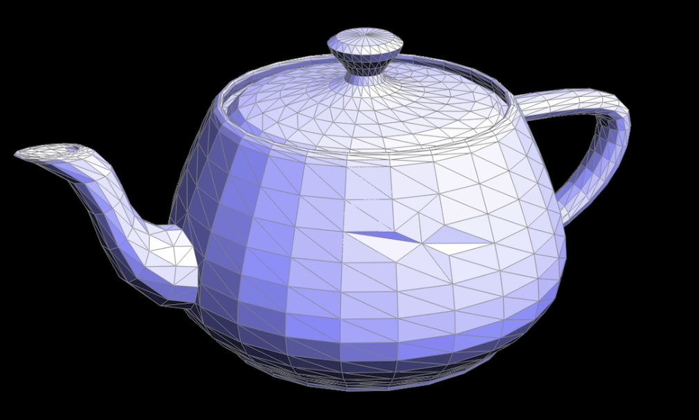

Overview
In this assignment, we explored various topics in geometric modeling, including the implementation of Bezier curves and surfaces using the de Casteljau algorithm, manipulation of triangle meshes using the half-edge data structure, and mesh refinement using loop subdivision. The assignment also provided an opportunity to experiment with creating custom polygon meshes using Blender.
Section I: Bezier Curves and Surfaces
Part 1: Bezier Curves with 1D de Casteljau Subdivision
Bezier Curves and the de Casteljau MethodBezier curves are defined by a set of control points. A curve of degree n is determined by (n+1) control points. The de Casteljau method is a recursive algorithm that linearly interpolates between these control points to generate the curve.
Implementation
De Casteljau's algorithm is a recursive process to evaluate a point on a Bezier curve. Given a set of control points and a parameter t, it linearly interpolates between adjacent control points to generate a new set of points. This is repeated until a single point is reached, which lies on the curve at t. My implementation in BezierCurve::evaluateStep() performs one subdivision step. It linearly interpolates between each adjacent pair of input points based on t to compute the intermediate control points for the next level.
Take a look at the provided .bzc files and create your own Bezier curve with 6 control points of your choosing. Use this Bezier curve for your screenshots below.
Here is an example Bezier curve defined by 6 control points:
Below are the steps of the de Casteljau evaluation from the original control points down to the final point:
|
|
|
|
|

|
|
|
|
By moving the control points and varying t, we can generate different Bezier curves:
Part 2: Bezier Surfaces with Separable 1D de Casteljau
To evaluate a point on a Bezier surface, de Casteljau algorithm first evaluates intermediate points along each parameter direction separately using 1D de Casteljau from Part 1. My implementation has BezierPatch::evaluateStep() perform one step of subdivision along a parameter, similar to the 1D case. BezierPatch::evaluate1D() recursively calls evaluateStep() to generate the final point on a curve. Finally, BezierPatch::evaluate() evaluates 1D curves along each parameter to compute the surface point. The key insight is that a Bezier patch is essentially a 1D Bezier curve in u swept along v. By breaking down the 2D evaluation into two 1D passes, the implementation becomes easier conceptually.
Below is an example Bezier surface of a teapot::Section II: Triangle Meshes and Half-Edge Data Structure
Part 3: Area-Weighted Vertex Normals
Implementation of Area-Weighted Vertex NormalsI computed the area-weighted vertex normal by iterating over all neighboring incident faces using the halfedge structure. Specifically, at each vertex, I looped around the one-ring neighborhood using the halfedge pointer. For each incident face, I accessed the face normal and weighted it by the face area from the Face class. I accumulated the weighted normals and normalized the sum to get the final vertex normal. To traverse the neighbors, I used the const HalfedgeCIter to preserve the mesh topology. The halfedge data structure provided an easy way to gather the neighborhood information needed for the area-weighted normal computation. Below are screenshots showing the smooth Phong shading from the vertex normals, compared to the default flat shading without normals on the teapot model:
Here is a teapot mesh rendered with and without vertex normals:
|

|

|
|
|
|
Part 4: Edge Flip
Implementation of Edge FlipMy implementation of HalfedgeMesh::flipEdge() performs an edge flip by reassigning pointers of all affected mesh elements to their new neighbors after the flip. It first checks that the input edge is not a boundary one. Then it gathers the relevant vertices, edges, faces, and halfedges around the flipped edge. Finally, it sets the neighbor pointers of each element correctly in the modified configuration.
Here is a teapot mesh before and after some edge flips:
|
|
|
Debugging Journey
While implementing this, I found it helpful to draw out the mesh connectivity before and after the flip during debugging. Setting all neighbor pointers explicitly also avoided issues from missed pointers.
Part 5: Edge Split
Implementation of Edge SplitI implemented edge splitting in HalfedgeMesh by first gathering the relevant existing mesh elements - the vertices, edges, faces, and halfedges around the split edge. I then allocated new vertices, edges, faces, and halfedges to form the new topology after the split. A key aspect was properly handling boundary edges by checking and returning early without modifying the mesh. The main technique I used was diagramming out split scenarios on paper and numbering the existing and new mesh elements beforehand. This let me methodically code the pointer reassignment logic post-split while referring to the drawings. I also handled non-manifold cases with potential duplicated entities to make the implementation robust to complex input meshes.
Here is a teapot mesh before and after some edge splits.
|
|
|
Here is a teapot mesh before and after a combination of both edge splits and edge flips.
|
|

|
Debugging Journey
One issue was not updating the halfedge and vertex pointers correctly after splitting boundary edges. I had neglected some key pointer reassignments which led to crashes or invalid meshes. Adding explicit checks for boundary edges and walking through the splits step-by-step on drawings enabled me to patch these bugs. Additionally, issues arose when dealing with meshes that had multiple coincident elements pre-split. I assumed unique entities in my original logic, causing problems when faces or vertices were duplicated. Adjusting my code to handle non-manifold geometry resolved these crashes.
Part 6: Loop Subdivision for Mesh Upsampling
My implementation of MeshResampler::upsample() follows the steps:I implemented loop subdivision in two main steps - computing updated vertex positions using the weighting rules, and then actually subdividing the mesh via edge splits/flips. To calculate the new positions, I iterated over all vertices and edges using the begin/end iterators. For each vertex, I stored the updated position in newPosition and marked it as not new. For each edge, I computed and stored the position of the vertex to be inserted later at the midpoint. After the new positions were calculated, I split every original edge while saving the old edges in a vector for easy traversal. The key helpers here were the isNew booleans to track which elements were newly created. I also selectively flipped only edges between an old and new vertex. Finally, I copied all the precomputed positions into the final Vertex::position field. A useful debugging technique was visually checking the intermediate results after the first step. When subdividing a cube, I noticed the mesh became slightly asymmetric over multiple passes. This occurs because the diagonal edges on each face are topologically asymmetric. By pre-splitting each diagonal, we can make the topology symmetric and have the cube neatly subdivide. In general, loop subdivision rounds off sharp edges and corners as it interpolates the mesh. We can reduce this effect by strategically pre-splitting certain edges we wish to preserve. The implementation helped me better understand subdivision topology and importance of symmetric mesh configuration.
Take some notes, as well as some screenshots, of your observations on how meshes behave after loop subdivision. What happens to sharp corners and edges? Can you reduce this effect by pre-splitting some edges?
The sharp corners and edges become smoother, refering to the images below.

|
||
Here is a more precise explanation of the pre-processing step I used on the cube before loop subdivision: To pre-process the cube, I split the diagonal edge for each face. This could be done by: a. Look up the halfedge pointer from the face. b. Access the diagonal edge by calling ->next()->next()->edge(). C. Split this diagonal edge using the splitEdge() function. After doing this for all 6 faces, each face now had symmetric crossed edges instead of diagonal edges. This made the topology of the cube symmetric prior to loop subdivision. Before, the cube had 18 undirected edges (12 on the sides + 3 on each face diagonal). After splitting diagonals, it increased to 30 undirected edges. This pre-processing allowed loop subdivision to proceed symmetrically on the cube without distortion.